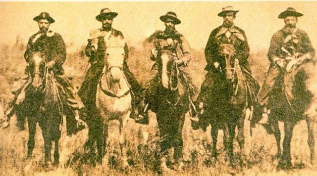
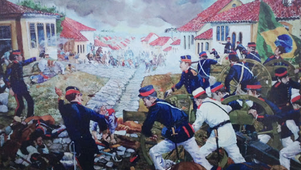
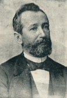

Sangue e Poder: A Revolução Federalista no Paraná
Seja bem-vindo a este site dedicado à Revolução Federalista (1893-1895), a maior guerra civil da República brasileira, que teve no Paraná o seu palco mais decisivo através do embate militar entre os Maragatos e os Pica-paus. Aqui, você explorará a história por trás desse trágico episódio e estudará os seus personagens fundamentais: o General Carneiro, líder da resistência no Cerco da Lapa, e o Barão do Serro Azul, herói da erva-mate que sacrificou sua fortuna para salvar Curitiba e acabou executado injustamente. Mais do que resgatar táticas de guerra, este espaço demonstra o impacto do conflito na identidade, na arte e na cultura paranaense, presentes até hoje no cinema com o premiado filme "O Preço da Paz", no patrimônio histórico do casario da Lapa e do Solar do Barão, e nas artes visuais contemporâneas através de imponentes murais urbanos que continuam inspirando novas gerações locais.

Marcas da História: Por que a Revolução Redefiniu o Paraná
A Revolução Federalista é um pilar da história do Paraná porque o estado foi o escudo que salvou a República brasileira. A heroica resistência de 26 dias no Cerco da Lapa atrasou o avanço dos Maragatos, permitindo a defesa do governo federal. Embora tenha deixado um trauma profundo — marcado pela violência extrema e pelo fuzilamento injusto do Barão do Serro Azul —, o conflito moldou a identidade paranaense. Hoje, essa memória sobrevive no patrimônio preservado da Lapa, no Solar do Barão em Curitiba e no cinema com o filme "O Preço da Paz".

Arte e Memória: O Legado Cultural da Revolução
A Revolução Federalista transformou um trauma histórico em combustível para a arte e a cultura paranaense. O conflito inspirou o aclamado filme "O Preço da Paz" (2003) e obras literárias que resgataram o Barão do Serro Azul do esquecimento, transformando-o de "traidor" em herói injustiçado. Atualmente, essa memória permanece viva no patrimônio urbano e pode ser visitada no Centro Histórico da Lapa — que preserva marcas de balas e o Panteão dos Heróis —, no Solar do Barão em Curitiba, no monumento da Serra do Mar e em diversos murais de arte urbana e nomes de ruas pela capital.

Curiosidades
O Cerco da Lapa e a Salvação da Repuública"
Curiosidade 1
Durante a revolução, os maragatos planejavam cruzar o Paraná rapidamente para invadir o Rio de Janeiro e derrubar o presidente Floriano Peixoto. No entanto, uma força de apenas 900 defensores na cidade da Lapa resistiu heroicamente a quase 3.000 rebeldes. Embora a Lapa tenha caído após 26 dias de combates intensos, esse atraso estratégico deu tempo vital para o governo federal reorganizar o exército na capital e salvar a recém-criada República brasileira.
O Sacrifício e o Apagamento do Barão do Cerro Azul"
Curiosidade 2
Quando o governo fugiu de Curitiba diante do avanço rebelde, o Barão do Cerro Azul (maior produtor de erva-mate do mundo) pagou uma fortuna do próprio bolso aos maragatos para evitar o saque e a destruição da cidade. Apesar de salvar a capital, ele foi falsamente acusado de traição pelas forças governamentais vitoriosas. O Barão foi sequestrado e executado sumariamente na Estrada de Ferro Curitiba-Paranaguá, e seu nome foi censurado e proibido pelo governo por mais de 40 anos para encobrir o crime de Estado.